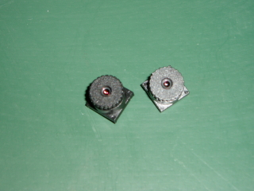
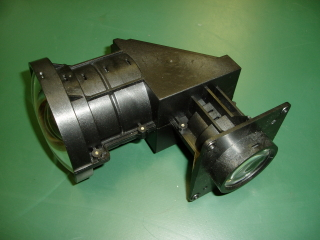
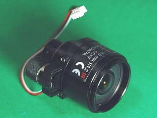

対応範囲
どこから頼んでも、
どこまでも頼めます。
光学系の仕事は、設計・製造・組立が別々の会社に分かれがちです。当社はこの3つを社内に持っているため、途中で切っても、通しでも受けられます。
- 01
光学設計
レンズ設計ソフト（TOLES／OPTALIX）で光学系を設計します。共同開発も承ります。
- 02
メカ設計
レンズ・プリズム・ミラーを組み合わせる機構を設計。ハード・ソフト・メカの全設計にも対応します。
- 03
加工・研磨
ガラス研磨、プラスチックレンズ成形、金属加工。鏡筒まで社内でつくります。
- 04
組立調整
クラス1000ブースでズームレンズや顕微鏡対物レンズを組み、検査設備で追い込みます。
設計のみ／試作のみ／設計〜試作〜量産〜品質管理のフルサポート。必要な範囲だけお受けします。
技術
扱えるものを、
具体的に書きます。
問い合わせる側がいちばん知りたいのは「うちの仕様が通るか」です。そこで対応できる形状・材料・寸法を、そのまま並べます。
光学設計
- プロジェクションレンズ（DMD／LCOS／CRT／LCD／OHP）
- カメラレンズ
- テレセントリックレンズ
- OA光学機器レンズ
- レーザ光学系レンズ（走査光学系、加工機など）
- アナモフィックレンズ、非球面レンズ、非球面トーリックレンズ
メカ設計
- 光学レンズ・プリズム・ミラーの組み合せ製品の機構設計、製造
- 精密自動機器制御のハード、ソフト、メカの全設計、製作
組立調整
- ズームレンズ
- 顕微鏡対物レンズ
- 露光レンズ
- 光学ユニット
クラス1000クリーンブースにて対応
ガラスレンズの研磨・加工
- レーザービームプリンター（LBP）用 fθレンズの加工材料取り加工／研磨加工（平面・球面・シリンダー面・トーリック面等 各種異形レンズ）の試作および量産
- パイレックスガラス製品の加工
- ステッパー用シリンダーレンズ研磨・芯取
- 大口径レンズの加工（荒摺・研磨）φ200mm まで／試作および量産
- 脆性材料の加工合成石英、セラミックス、サファイア等
- 各種試作・量産治工具等リセスツール（球面・シリンダー面・平面）、研磨皿
- 高精度ミラー
プラスチックレンズ
- φ1mm 〜 200mm の高精度プラスチックレンズ成形
- 試作用切削レンズ加工
金属加工
- 加工一品から承っております
- 短納期・低価格
- 主な加工材料：アルミ、真鍮、ステンレス
製品
つくってきたもの

小型レンズユニット
プロジェクションレンズ
カメラ用レンズユニット
主要製品
- デジタルビデオヘッド関連機器
- 顕微鏡応用機器
- 簡易干渉対物 設計製作
- レーザー応用機器
- モノクロメーター（分光器）周辺機器
- 分光器応用機器
- 光通信分野の自動調芯組立機
主要オーダーメイド
- 光通信分野の自動機等
- 半導体分野の検査および測定機器等
- 分析機器、赤外顕微鏡、分光器等
- 医用光学機器等
- 特殊光学機器、液晶関連検査機器等
カタログ製品
- レンズ解像力検査投影器
- 携帯レンズユニット検査機
- 魚眼レンズ検査機
- 非接触式 非球面レンズ偏芯・厚さ測定器
- 簡易小型オートコリメーター
- 小型水素吸入器
- 業務用水素吸入器
設備
設計から検査まで、
手元にあります。
設計設備
- レンズ設計ソフト（TOLES／OPTALIX）
- 2式
- CADシステム（AutoCAD LT97）
- 6式
検査設備
- 投影機（ミツトヨ）
- オートコリメータ（ニコン）
- 測定顕微鏡
- 非接触偏芯厚さ測定器
- オリンパス干渉計
組立設備
- クラス1000 クリーンブース
加工設備
| 設備 | 台数 |
|---|---|
| ペンチレース | 1台 |
| ボール盤 | 10台 |
| 小型フライス タテ・ヨコ型（長谷川） | 各2台 |
| タッピング | 4台 |
| 900mm旋盤（長谷川） | 3台 |
| 鋸盤ラクソー | 2台 |
| 同上 XYデジタルスケール付 | 1台 |
| タテフライス（イワシタ）1番 | 2台 |
| タテフライス（イワシタ）2番 | 1台 |
| タテフライス（遠州）2番 | 1台 |
| ヨコフライス | 1台 |
| 6尺旋盤（森） | 1台 |
| NC旋盤（森） | 1台 |
| マシニングセンター（牧野・OKK） | 2台 |
| 万能工具研削盤 | 1台 |
| ローレットマシン | 1台 |
主要取引先
8社と、長く。
半導体、映像機器、光学機器、計測。分野の違う会社に、それぞれの専門で使っていただいています。
- ソニーセミコンダクタ株式会社
- 東芝デジタルメディアエンジニアリング株式会社
- 株式会社セガトイズ
- オプティックス株式会社
- 明治電機工業株式会社
- 株式会社オーク製作所
- 株式会社東京インスツルメンツ
- 株式会社菱光社
※ 社名は原サイトの記載どおりに掲載しています。
よくあるご質問
はじめての方へ
設計だけ、試作だけの依頼はできますか。
できます。光学レンズの設計や共同開発のご依頼から、試作のみのご依頼、設計から試作・量産・品質管理までのフルサポートまで、必要な範囲でお受けします。
どのくらいの大きさのレンズを研磨できますか。
大口径レンズは荒摺・研磨ともφ200mmまで対応します。試作から量産までお受けします。平面・球面・シリンダー面・トーリック面など各種異形レンズにも対応します。
ガラス以外の材料も加工できますか。
合成石英、セラミックス、サファイアなどの脆性材料の加工に対応します。パイレックスガラス製品の加工も承ります。プラスチックレンズはφ1mm〜200mmの高精度成形と、試作用の切削レンズ加工が可能です。
金属部品を1個だけ頼めますか。
一品から承っております。短納期・低価格でお受けします。主な加工材料はアルミ、真鍮、ステンレスです。鏡筒などレンズまわりの部品も社内で加工しています。
クリーンな環境での組立はできますか。
クラス1000のクリーンブースを備えています。ズームレンズ、顕微鏡対物レンズ、露光レンズ、光学ユニットの組立調整を行っています。
会社概要
株式会社ベルノ技研
- 社名
- 株式会社ベルノ技研
- 設立
- 1980年5月1日（創業 1975年3月）
- 資本金
- 8,738万円（2008年6月現在）
- 代表者
- 代表取締役 井坪 雅和
- 従業員数
- 15名（技術 40%／組立調整 45%／管理事務 15%）
- 所在地
- 〒352-0005 埼玉県新座市中野2-1-28
- 電話・FAX
- Tel. 048-480-3851 ／ Fax. 048-480-3815
- 取引銀行
- 武蔵野銀行 志木支店／きらぼし銀行 朝霞支店
三菱UFJ銀行 新座志木支店
アクセス
- JR武蔵野線
新座駅より徒歩20分
- 東武東上線
柳瀬川駅より徒歩20分
- 高速道路
関越自動車道 所沢インターより5分
沿革
- 1975年3月
井坪設計事務所 開業。
- 1976年6月
井坪設計製作所に改名。
- 1980年5月
法人に改組、有限会社ベルノ技研 設立（資本金350万円）。
- 1984年5月
株式会社ベルノ技研に変更。
- 1998年4月
海外（韓国・台湾）に営業を展開。
- 2002年6月
海外（中国）に営業を展開。
- 2008年4月
井坪 雅和、代表取締役社長に就任（資本金 8,738万円）。
仕様書がなくても結構です。
「こういう光学系を組みたい」「この材料は削れますか」からお話しします。設計のみ、加工のみのご相談も歓迎します。